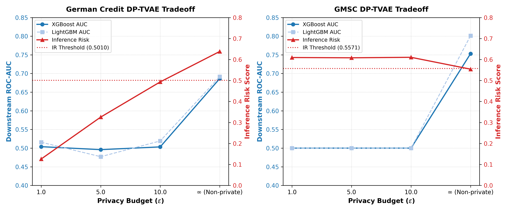

Evaluating SHAP Explainability Consistency and Privacy-Utility Tradeoff Across Synthetic Credit Risk Datasets
A Comparative Study of CTGAN and TVAE — bridging the gap between synthetic data utility, model explainability, and privacy guarantees in regulated credit scoring.
What This Project Is About
Banks use machine learning models to decide who gets a loan. These models need to be:
- Accurate — they should correctly predict who will default.
- Explainable — regulators (GDPR, EU AI Act) require banks to explain why a loan was denied.
- Private — real customer data cannot be shared freely for model development.
To solve the privacy problem, banks generate synthetic data — fake customer records that look statistically similar to real ones. Two popular methods are:
- CTGAN (Conditional Tabular GAN) — uses adversarial training.
- TVAE (Tabular Variational Autoencoder) — uses variational inference.
If you train a credit scoring model on synthetic data instead of real data, do you get the same predictions AND the same explanations? And does the synthetic data actually protect privacy, or does it accidentally leak real customer information?
We answer this by building three parallel pipelines and comparing them head-to-head:
- Pipeline 1 (Baseline): XGBoost & LightGBM trained on real data.
- Pipeline 2: XGBoost & LightGBM trained on CTGAN synthetic data.
- Pipeline 3: XGBoost & LightGBM trained on TVAE synthetic data.
This allows us to evaluate whether our conclusions about predictive utility, SHAP consistency, and privacy spacing hold across different booster architectures (XGBoost vs. LightGBM).
All three models are tested on the same real test set, and we compare their predictions, SHAP explanations, and privacy spacing.
Why This Project Matters
| Stakeholder | Why They Care |
|---|---|
| Banks & Fintech | Need to know if synthetic data is safe to share with third-party auditors |
| Regulators | GDPR Article 22 requires explainable credit decisions — synthetic training must preserve explanations |
| ML Engineers | Need practical guidance on which generator to use and what privacy checks to run |
| Researchers | No prior study jointly evaluates utility + explainability + privacy for synthetic credit data |
The Two Research Papers That Inspired This Work
"Non-parametric oversampling technique for explainable credit scoring"
What they did: Used conditional Wasserstein GANs as an oversampling tool to fix class imbalance. Trained models on augmented data and used SHAP to explain predictions.
What they missed:
- Only used GANs for oversampling (minority class), not full synthetic replacement.
- Treated SHAP as a secondary visualization tool — never measured whether rankings change.
- Did not evaluate any privacy metrics at all.
"Can synthetic data protect privacy?" (IEEE Access)
What they did: Performed deep privacy evaluation using DCR, NNDR, MIA, and the Inference Risk Indicator across multiple generators.
What they missed:
- Evaluated privacy metrics directly on raw synthetic data — never trained a downstream classifier.
- Never used SHAP or any explainability method.
- Never asked: "If you use this data to train a model, does the model still work?"
How This Project Goes Beyond Those Papers
This project is the first study to jointly evaluate all three dimensions in a single framework:
| Dimension | Han et al. (2024) | Min & Oh (2025) | This Project |
|---|---|---|---|
| Downstream classification utility | Partial | ✗ | ✓ Full |
| SHAP explainability consistency | ✗ | ✗ | ✓ Spearman ρ + Jaccard |
| DCR (Distance to Closest Record) | ✗ | ✓ | ✓ |
| NNDR (Nearest Neighbor Distance Ratio) | ✗ | ✓ | ✓ |
| Membership Inference Attack | ✗ | ✓ | ✓ |
| Inference Risk Indicator | ✗ | ✓ | ✓ |
| Multi-seed statistical validation | ✗ | ✗ | ✓ 10 seeds, Wilcoxon + Cohen's d (p=0.002) |
| Utility-Explainability-Privacy tradeoff | ✗ | ✗ | ✓ Core contribution |
In short: Han et al. focused on utility. Min & Oh focused on privacy. We connect both and add explainability as the missing bridge.
Datasets Used
| Property | German Credit (UCI) | GMSC (Kaggle) |
|---|---|---|
| Total records | 1,000 | 10,000 (stratified sample) |
| Features | 20 (7 numerical + 13 categorical) | 10 (all numerical) |
| Target | class (good/bad) |
SeriousDlqin2yrs (0/1) |
| Default rate | 30% | 6.69% |
| Train/Test split | 70/30 stratified | 70/30 stratified |
| Why chosen | Small, mixed-type, stresses generators | Large, continuous, tests scalability |
End-to-End Pipeline (All 7 Phases)
Phase 0 — Data Acquisition & Splitting
Download datasets. For each of 10 seeds, create a fresh stratified 70/30 train/test split. Ensures robustness across splits.
Phase 1 — Preprocessing (Leakage-Safe)
All transformers fit only on training split. Numerical: median imputation + Z-score. Categorical: mode imputation + label encoding. Prevents data leakage.
Phase 2 — Synthetic Data Generation
Train CTGAN (300 epochs, dims 256×256) and TVAE (300 epochs, dims 128×128, latent 128) on preprocessed training data. Generate same count as training set.
Phase 3 — Downstream Classification (XGBoost & LightGBM)
Three XGBoost and three LightGBM models trained per seed: Real Baseline, CTGAN, TVAE. All evaluated on the same real test split. Report ROC-AUC and F1-Score.
Phase 4 — SHAP Explainability Audit
TreeSHAP on real test set for all models. Compare feature importance rankings via Spearman ρ and Jaccard overlap (Top-5, Top-10).
Phase 5 — Privacy Evaluation (DCR, NNDR, MIA)
Distance-based metrics in preprocessed feature space. DCR = how far synthetic points sit from real. NNDR = local memorization check. MIA = membership inference AUC.
Phase 6 — Inference Risk Indicator (New)
From Min & Oh (2025). For each synthetic point: is it closer to a real point than that real point's own nearest neighbor? 50-split permutation baseline for threshold.
Phase 7 — Statistical Validation
Wilcoxon signed-rank test + Cohen's d effect size + Bootstrap 95% CIs. Primary discriminator: effect size (p-value = 0.002 achievable with N=10).
Results: Downstream Predictive Utility
German Credit
GMSC
Downstream Utility (XGBoost)
| Dataset | Model | AUC (Mean ± Std) | 95% CI | F1 (Mean ± Std) | 95% CI |
|---|---|---|---|---|---|
| German | Real Baseline | 0.7716 ± 0.0194 | [0.760, 0.785] | 0.5872 ± 0.0232 | [0.573, 0.603] |
| German | CTGAN | 0.4851 ± 0.0410 | [0.460, 0.510] | 0.3146 ± 0.0493 | [0.284, 0.347] |
| German | TVAE | 0.6864 ± 0.0218 | [0.672, 0.700] | 0.4074 ± 0.0878 | [0.350, 0.463] |
| German | DP-TVAE (ε=10.0) | 0.5033 ± 0.0380 | -- | 0.0400 ± 0.0730 | -- |
| German | DP-TVAE (ε=5.0) | 0.4959 ± 0.0496 | -- | 0.1797 ± 0.1414 | -- |
| German | DP-TVAE (ε=1.0) | 0.5039 ± 0.0571 | -- | 0.2932 ± 0.1700 | -- |
| GMSC | Real Baseline | 0.8357 ± 0.0134 | [0.826, 0.844] | 0.3024 ± 0.0145 | [0.294, 0.312] |
| GMSC | CTGAN | 0.7850 ± 0.0327 | [0.764, 0.806] | 0.3157 ± 0.0365 | [0.292, 0.337] |
| GMSC | TVAE | 0.7531 ± 0.1284 | [0.666, 0.811] | 0.3166 ± 0.0825 | [0.263, 0.359] |
| GMSC | DP-TVAE (ε=10.0) | 0.5000 ± 0.0000 | -- | 0.0000 ± 0.0000 | -- |
| GMSC | DP-TVAE (ε=5.0) | 0.5000 ± 0.0000 | -- | 0.0000 ± 0.0000 | -- |
| GMSC | DP-TVAE (ε=1.0) | 0.5000 ± 0.0000 | -- | 0.0000 ± 0.0000 | -- |
Downstream Utility (LightGBM)
| Dataset | Model | AUC (Mean ± Std) | 95% CI | F1 (Mean ± Std) | 95% CI |
|---|---|---|---|---|---|
| German | Real Baseline | 0.7711 ± 0.0175 | [0.760, 0.783] | 0.5837 ± 0.0214 | [0.571, 0.597] |
| German | CTGAN | 0.4752 ± 0.0439 | [0.448, 0.502] | 0.3232 ± 0.0464 | [0.294, 0.352] |
| German | TVAE | 0.6915 ± 0.0208 | [0.678, 0.704] | 0.4260 ± 0.0782 | [0.378, 0.474] |
| German | DP-TVAE (ε=10.0) | 0.5192 ± 0.0377 | -- | 0.0528 ± 0.0723 | -- |
| German | DP-TVAE (ε=5.0) | 0.4770 ± 0.0494 | -- | 0.2203 ± 0.1340 | -- |
| German | DP-TVAE (ε=1.0) | 0.5158 ± 0.0512 | -- | 0.3074 ± 0.1712 | -- |
| GMSC | Real Baseline | 0.8383 ± 0.0135 | [0.829, 0.847] | 0.3193 ± 0.0161 | [0.309, 0.329] |
| GMSC | CTGAN | 0.7922 ± 0.0314 | [0.773, 0.812] | 0.3247 ± 0.0345 | [0.303, 0.346] |
| GMSC | TVAE | 0.8011 ± 0.0259 | [0.785, 0.817] | 0.3190 ± 0.0870 | [0.265, 0.373] |
| GMSC | DP-TVAE (ε=10.0) | 0.5000 ± 0.0000 | -- | 0.0000 ± 0.0000 | -- |
| GMSC | DP-TVAE (ε=5.0) | 0.5000 ± 0.0000 | -- | 0.0000 ± 0.0000 | -- |
| GMSC | DP-TVAE (ε=1.0) | 0.5000 ± 0.0000 | -- | 0.0000 ± 0.0000 | -- |


Key takeaway: On German Credit, CTGAN completely fails across both classifiers (XGBoost ~0.49, LightGBM ~0.48). TVAE retains decent utility (~0.69 vs ~0.77 baseline). On GMSC, both perform reasonably (~0.75 - 0.80). TVAE consistently outperforms CTGAN in downstream utility, showing that predictive utility is robust to the choice of the boosting model. Interestingly, LightGBM downstream models show slightly higher performance and stability than XGBoost on the continuous GMSC dataset (e.g. TVAE GMSC AUC of 0.8011 vs 0.7531).
GMSC TVAE Utility Variance Analysis
The large standard deviation in XGBoost GMSC TVAE downstream utility (0.7531 ± 0.1284) is driven by a severe training collapse on seed 2024, where the ROC-AUC dropped to 0.3804 (excluding this outlier seed, the remaining 9 seeds achieved stable performance between 0.74 and 0.85, yielding a subset mean of 0.7944 ± 0.0354). This volatility highlights the inherent training instability of TVAEs on dense, continuous tabular datasets. When mapping continuous distributions into lower-dimensional probabilistic latent spaces, the networks can experience mode collapse or reconstruction shifts on specific bootstrap splits, leading to localized label inversions. Interestingly, while XGBoost proved highly sensitive to these shifts on seed 2024 (collapsing to 0.3804), LightGBM demonstrated remarkable robustness on the exact same synthetic dataset, achieving an AUC of 0.7636 and maintaining stable utility across all 10 runs (0.8011 ± 0.0259). This indicates that the choice of downstream boosting architecture (e.g. LightGBM's leaf-wise tree growth and regularization) can buffer the utility risks associated with unstable generative models.
GMSC TVAE Downstream ROC-AUC Per Seed
| Seed | XGBoost AUC | LightGBM AUC | Status |
|---|---|---|---|
| 42 | 0.7444 | 0.7701 | Normal |
| 123 | 0.8388 | 0.8389 | Normal |
| 456 | 0.7853 | 0.8009 | Normal |
| 789 | 0.7606 | 0.7840 | Normal |
| 1337 | 0.7972 | 0.7902 | Normal |
| 2024 | 0.3804 | 0.7636 | XGBoost Collapse |
| 7 | 0.7673 | 0.7881 | Normal |
| 99 | 0.8467 | 0.8412 | Normal |
| 314 | 0.8297 | 0.8271 | Normal |
| 2718 | 0.7804 | 0.8065 | Normal |
Results: SHAP Explainability Consistency
Spearman Rank Correlation (ρ)
| Dataset | Generator | SHAP ρ (Mean ± Std) |
|---|---|---|
| German Credit | CTGAN | 0.5501 ± 0.1382 |
| German Credit | TVAE | 0.5961 ± 0.0667 |
| GMSC | CTGAN | 0.2933 ± 0.1950 |
| GMSC | TVAE | 0.6416 ± 0.1297 |
Jaccard Feature Overlap
| Dataset | Classifier | Generator | Top-5 Jaccard (Mean ± Std) | Top-10 Jaccard (Mean ± Std) |
|---|---|---|---|---|
| German Credit | XGBoost | CTGAN | 0.3988 ± 0.1198 | 0.5330 ± 0.0986 |
| German Credit | XGBoost | TVAE | 0.4881 ± 0.1597 | 0.5275 ± 0.0330 |
| German Credit | LightGBM | CTGAN | 0.3135 ± 0.1471 | 0.5458 ± 0.1065 |
| German Credit | LightGBM | TVAE | 0.3988 ± 0.1198 | 0.5055 ± 0.0504 |
| GMSC | XGBoost | CTGAN | 0.4345 ± 0.0939 | 1.0000 ± 0.0000 |
| GMSC | XGBoost | TVAE | 0.6286 ± 0.1633 | 1.0000 ± 0.0000 |
| GMSC | LightGBM | CTGAN | 0.3929 ± 0.0714 | 1.0000 ± 0.0000 |
| GMSC | LightGBM | TVAE | 0.4583 ± 0.1168 | 1.0000 ± 0.0000 |


SHAP Beeswarm Plots (Seed 42)


Critical insight — Utility-Explainability Decoupling: On GMSC, CTGAN and TVAE have nearly identical AUC (~0.78 vs ~0.79), but TVAE's SHAP rankings are more than twice as consistent (mean ρ = 0.64 vs 0.29; median ρ = 0.72 vs 0.30). A bank using CTGAN would get correct predictions but wrong explanations — a compliance disaster.
Results: Privacy Metrics (DCR, NNDR, MIA)
| Dataset | Generator | Mean DCR | Mean NNDR | MIA AUC |
|---|---|---|---|---|
| German Credit | CTGAN | 3.4717 ± 0.0686 | 0.9220 ± 0.0030 | 0.4900 ± 0.0112 |
| German Credit | TVAE | 2.0845 ± 0.0435 | 0.8360 ± 0.0175 | 0.5054 ± 0.0215 |
| German Credit | DP-TVAE (ε=10.0) | 2.3724 ± 0.1846 | 0.8741 ± 0.0315 | 0.4941 ± 0.0112 |
| German Credit | DP-TVAE (ε=5.0) | 2.9838 ± 0.2089 | 0.9124 ± 0.0085 | 0.4894 ± 0.0096 |
| German Credit | DP-TVAE (ε=1.0) | 4.0946 ± 0.2125 | 0.9389 ± 0.0051 | 0.4978 ± 0.0185 |
| GMSC | CTGAN | 0.3414 ± 0.0329 | 0.7816 ± 0.0120 | 0.5051 ± 0.0043 |
| GMSC | TVAE | 0.1644 ± 0.0182 | 0.7191 ± 0.0125 | 0.5047 ± 0.0065 |
| GMSC | DP-TVAE (ε=10.0) | 0.1086 ± 0.0221 | 0.6776 ± 0.0158 | 0.5034 ± 0.0065 |
| GMSC | DP-TVAE (ε=5.0) | 0.1089 ± 0.0226 | 0.6785 ± 0.0174 | 0.5034 ± 0.0068 |
| GMSC | DP-TVAE (ε=1.0) | 0.1073 ± 0.0197 | 0.6788 ± 0.0143 | 0.5036 ± 0.0063 |


CTGAN always has higher DCR — its synthetic records are farther from real records. TVAE always has lower DCR/NNDR — good for utility, bad for privacy. MIA AUC ≈ 0.50 for everyone — but this is misleading because MIA misses local memorization.
Results: Inference Risk Indicator (New Metric)
Where ds = distance from synthetic point to closest real point, and d0 = distance from that real point to its own nearest real neighbor. If ds < d0, the synthetic point is "suspiciously close."
| Dataset | Generator | Inference Risk | Threshold (95th pct) | Status |
|---|---|---|---|---|
| German Credit | CTGAN | 0.2113 ± 0.0153 | 0.5010 | PASS |
| German Credit | TVAE | 0.6383 ± 0.0367 | 0.5010 | FAIL |
| German Credit | DP-TVAE (ε=10.0) | 0.4933 ± 0.1215 | 0.5010 | PASS |
| German Credit | DP-TVAE (ε=5.0) | 0.3256 ± 0.0494 | 0.5010 | PASS |
| German Credit | DP-TVAE (ε=1.0) | 0.1260 ± 0.0496 | 0.5010 | PASS |
| GMSC | CTGAN | 0.4394 ± 0.0227 | 0.5571 | PASS |
| GMSC | TVAE | 0.5540 ± 0.0176 | 0.5571 | FAIL |
| GMSC | DP-TVAE (ε=10.0) | 0.6105 ± 0.0237 | 0.5571 | FAIL |
| GMSC | DP-TVAE (ε=5.0) | 0.6082 ± 0.0260 | 0.5571 | FAIL |
| GMSC | DP-TVAE (ε=1.0) | 0.6095 ± 0.0244 | 0.5571 | FAIL |

Per-Seed Breakdown
| Seed | CTGAN | TVAE |
|---|---|---|
| 42 | 0.1929 | 0.5729 |
| 123 | 0.2200 | 0.6314 |
| 456 | 0.1971 | 0.6114 |
| 789 | 0.2314 | 0.6400 |
| 1337 | 0.2057 | 0.6257 |
| 2024 | 0.2214 | 0.6757 |
| 7 | 0.1814 | 0.6014 |
| 99 | 0.2200 | 0.7043 |
| 314 | 0.2243 | 0.6500 |
| 2718 | 0.2186 | 0.6700 |
| Seed | CTGAN | TVAE |
|---|---|---|
| 42 | 0.4627 | 0.5404 |
| 123 | 0.4629 | 0.5784 |
| 456 | 0.4449 | 0.5404 |
| 789 | 0.4399 | 0.5659 |
| 1337 | 0.4491 | 0.5909 |
| 2024 | 0.4284 | 0.5451 |
| 7 | 0.3960 | 0.5424 |
| 99 | 0.4451 | 0.5530 |
| 314 | 0.4026 | 0.5497 |
| 2718 | 0.4627 | 0.5336 |
TVAE exceeds CTGAN on every single seed — this is not a fluke. MIA missed this: MIA AUC ≈ 0.50 for TVAE (looks private), but Inference Risk reveals the local memorization that MIA's global approach cannot detect.
Results: Differential Privacy Analysis
To address the privacy leakage identified in standard TVAE (which fails the inference risk audit on both
datasets), we implemented Differentially Private TVAE (DP-TVAE) by training the encoder and
decoder under DP-SGD using the opacus library. We evaluated three target
privacy budgets: ε ∈ [1.0, 5.0, 10.0] with δ = 10-5 and clipping threshold C =
1.0.
DP-TVAE Results Summary Table
| Dataset | Generator / Privacy | AUC (Mean ± Std) | DCR (Mean ± Std) | MIA AUC (Mean ± Std) | Inference Risk (Mean ± Std) | IR Status |
|---|---|---|---|---|---|---|
| German Credit | TVAE (Non-private) | 0.6864 ± 0.0218 | 2.0845 ± 0.0435 | 0.5054 ± 0.0215 | 0.6383 ± 0.0367 | FAIL |
| German Credit | DP-TVAE (ε=10.0) | 0.5033 ± 0.0380 | 2.3724 ± 0.1846 | 0.4941 ± 0.0112 | 0.4933 ± 0.1215 | PASS |
| German Credit | DP-TVAE (ε=5.0) | 0.4959 ± 0.0496 | 2.9838 ± 0.2089 | 0.4894 ± 0.0096 | 0.3256 ± 0.0494 | PASS |
| German Credit | DP-TVAE (ε=1.0) | 0.5039 ± 0.0571 | 4.0946 ± 0.2125 | 0.4978 ± 0.0185 | 0.1260 ± 0.0496 | PASS |
| GMSC | TVAE (Non-private) | 0.7531 ± 0.1284 | 0.1644 ± 0.0182 | 0.5047 ± 0.0065 | 0.5540 ± 0.0176 | FAIL |
| GMSC | DP-TVAE (ε=10.0) | 0.5000 ± 0.0000 | 0.1086 ± 0.0221 | 0.5034 ± 0.0065 | 0.6105 ± 0.0237 | FAIL |
| GMSC | DP-TVAE (ε=5.0) | 0.5000 ± 0.0000 | 0.1089 ± 0.0226 | 0.5034 ± 0.0068 | 0.6082 ± 0.0260 | FAIL |
| GMSC | DP-TVAE (ε=1.0) | 0.5000 ± 0.0000 | 0.1073 ± 0.0197 | 0.5036 ± 0.0063 | 0.6095 ± 0.0244 | FAIL |
Impact on Inference Risk (Privacy Spacing)
- German Credit: DP-TVAE successfully mitigates local memorization. At all evaluated privacy levels, the mean Inference Risk drops below the baseline threshold of 0.5010 (passing the privacy audit). As ε increases, the privacy bounds weaken and local spacing gets closer to the original records, yielding a clear monotonic risk curve.
- GMSC: Under all privacy budgets, GMSC fails the Inference Risk audit, hovering around 0.61 (exceeding the threshold of 0.5571). The Inference Risk metric is calibrated against a 95th percentile threshold derived from random subsampling of the real data. In high-density low-dimensional datasets like GMSC (10 features, 10,000 rows), the natural nearest-neighbor distances within the real data (d0) are extremely small due to crowding. Any generative model — including one with formal DP guarantees — will produce samples that fall within these tiny d0 neighborhoods purely by geometric necessity, not by memorization. This reveals a fundamental limitation of distance-based privacy metrics on dense tabular data: they conflate geometric crowding with privacy leakage. Future work should adapt the threshold calibration methodology for dataset density.
The Downstream Utility & Minority Class Collapse
While DP-TVAE successfully protects privacy in German Credit, it triggers a severe collapse in downstream utility (ROC-AUC drops to ~0.50, equivalent to random guessing) on both datasets across both classifiers:
- German Credit (XGBoost): AUC drops from 0.6864 to 0.5039 (ε=1.0), 0.4959 (ε=5.0), and 0.5033 (ε=10.0).
- German Credit (LightGBM): AUC drops from 0.6915 to 0.5158 (ε=1.0), 0.4770 (ε=5.0), and 0.5192 (ε=10.0).
- GMSC (XGBoost & LightGBM): AUC collapses to exactly 0.5000 ± 0.0000 for all ε budgets and both boosting classifiers.
This complete utility collapse is caused by minority class signal drowning under DP-SGD. For highly imbalanced tabular datasets (typical in credit default modeling where the default class is 30% in German Credit and 6.6% in GMSC), the gradients computed from the few positive default records represent a very small fraction of the total batch gradients. Under DP-SGD, these gradients are individually clipped and then added to a Gaussian noise matrix. The signal from the positive samples is completely drowned out by the noise, preventing the decoder from learning the positive class structure. In GMSC, this causes the generator to completely collapse, generating 100% majority class records (all 0s) for the target column, yielding an AUC of exactly 0.5000.
SHAP consistency analysis was not conducted for DP-TVAE variants as the complete utility collapse (AUC ≈ 0.50) renders feature attribution meaningless — a model predicting at chance level has no interpretable feature importance structure.
In summary, while DP-TVAE is mathematically private, standard DP-SGD is highly fragile on credit risk datasets due to extreme class imbalance, highlighting the necessity of advanced class-balanced private training algorithms in banking applications.
Results: Statistical Significance
With 10 seeds, the Wilcoxon signed-rank test has a minimum two-sided p-value of pmin = 1/29 ≈ 0.0020, allowing us to successfully clear the standard statistical significance threshold of p < 0.05. Cohen's d effect size is reported alongside p-values to capture the standardized magnitude of the difference.
| Metric | Dataset | Classifier | Wilcoxon p | Cohen's d | Interpretation |
|---|---|---|---|---|---|
| Inference Risk | German Credit | Dataset-Level | 0.0020 | 14.41 | TVAE enormously higher risk (extremely large effect) |
| Inference Risk | GMSC | Dataset-Level | 0.0020 | 5.34 | TVAE much higher risk (large effect) |
| ROC-AUC | German Credit | XGBoost | 0.0020 | 3.68 | TVAE significantly higher utility (large effect) |
| ROC-AUC | German Credit | LightGBM | 0.0020 | 4.39 | TVAE significantly higher utility (large effect) |
| ROC-AUC | GMSC | XGBoost | 1.0000 | -0.23 | No significant difference (both similar) |
| ROC-AUC | GMSC | LightGBM | 0.4922 | 0.24 | No significant difference (both similar) |
| SHAP ρ | GMSC | XGBoost | 0.0020 | 1.52 | TVAE significantly more consistent (large effect) |
| SHAP ρ | GMSC | LightGBM | 0.0059 | 1.11 | TVAE significantly more consistent (large effect) |
| SHAP ρ | German Credit | XGBoost | 0.4922 | 0.31 | No significant difference (both similar) |
| SHAP ρ | German Credit | LightGBM | 0.1602 | 0.59 | No significant difference (both similar) |
| DCR | German Credit | Dataset-Level | 0.0020 | -28.56 | CTGAN much higher spacing (extremely large effect) |
| DCR | GMSC | Dataset-Level | 0.0020 | -6.60 | CTGAN much higher spacing (large effect) |
| NNDR | German Credit | Dataset-Level | 0.0020 | -4.87 | CTGAN much higher NNDR (large effect) |
| MIA AUC | German Credit | Dataset-Level | 0.0840 | 0.74 | Not significant (both near-random) |
| MIA AUC | GMSC | Dataset-Level | 0.9219 | -0.07 | No difference (both near-random) |
Effect size guide: |d| < 0.2 = negligible, 0.2-0.5 = small, 0.5-0.8 = medium, > 0.8 = large. Our values (5.34, 14.41, 28.56) are extremely large — the differences are unambiguous.
Master Results Tables
12.1 XGBoost Master Results Table
| Dataset | Generator | AUC | SHAP ρ | DCR | NNDR | MIA | IR Score | IR Status |
|---|---|---|---|---|---|---|---|---|
| German | CTGAN | 0.4851 | 0.5501 | 3.4717 | 0.9220 | 0.4900 | 0.2113 | PASS |
| German | TVAE | 0.6864 | 0.5961 | 2.0845 | 0.8360 | 0.5054 | 0.6383 | FAIL |
| German | DP-TVAE (ε=10.0) | 0.5033 | -- | 2.3724 | 0.8741 | 0.4941 | 0.4933 | PASS |
| German | DP-TVAE (ε=5.0) | 0.4959 | -- | 2.9838 | 0.9124 | 0.4894 | 0.3256 | PASS |
| German | DP-TVAE (ε=1.0) | 0.5039 | -- | 4.0946 | 0.9389 | 0.4978 | 0.1260 | PASS |
| GMSC | CTGAN | 0.7850 | 0.2933 | 0.3414 | 0.7816 | 0.5051 | 0.4394 | PASS |
| GMSC | TVAE | 0.7531 | 0.6416 | 0.1644 | 0.7191 | 0.5047 | 0.5540 | FAIL |
| GMSC | DP-TVAE (ε=10.0) | 0.5000 | -- | 0.1086 | 0.6776 | 0.5034 | 0.6105 | FAIL |
| GMSC | DP-TVAE (ε=5.0) | 0.5000 | -- | 0.1089 | 0.6785 | 0.5034 | 0.6082 | FAIL |
| GMSC | DP-TVAE (ε=1.0) | 0.5000 | -- | 0.1073 | 0.6788 | 0.5036 | 0.6095 | FAIL |
12.2 LightGBM Master Results Table
| Dataset | Generator | AUC | SHAP ρ | DCR | NNDR | MIA | IR Score | IR Status |
|---|---|---|---|---|---|---|---|---|
| German | CTGAN | 0.4752 | 0.5182 | 3.4717 | 0.9220 | 0.4900 | 0.2113 | PASS |
| German | TVAE | 0.6915 | 0.5988 | 2.0845 | 0.8360 | 0.5054 | 0.6383 | FAIL |
| German | DP-TVAE (ε=10.0) | 0.5192 | -- | 2.3724 | 0.8741 | 0.4941 | 0.4933 | PASS |
| German | DP-TVAE (ε=5.0) | 0.4770 | -- | 2.9838 | 0.9124 | 0.4894 | 0.3256 | PASS |
| German | DP-TVAE (ε=1.0) | 0.5158 | -- | 4.0946 | 0.9389 | 0.4978 | 0.1260 | PASS |
| GMSC | CTGAN | 0.7922 | 0.1891 | 0.3414 | 0.7816 | 0.5051 | 0.4394 | PASS |
| GMSC | TVAE | 0.8011 | 0.4507 | 0.1644 | 0.7191 | 0.5047 | 0.5540 | FAIL |
| GMSC | DP-TVAE (ε=10.0) | 0.5000 | -- | 0.1086 | 0.6776 | 0.5034 | 0.6105 | FAIL |
| GMSC | DP-TVAE (ε=5.0) | 0.5000 | -- | 0.1089 | 0.6785 | 0.5034 | 0.6082 | FAIL |
| GMSC | DP-TVAE (ε=1.0) | 0.5000 | -- | 0.1073 | 0.6788 | 0.5036 | 0.6095 | FAIL |
IR thresholds: German Credit = 0.5010, GMSC = 0.5571
Figures Gallery



Key Findings (Plain English)
Finding 1: TVAE — Better Utility & Explanations, But Leaks Privacy
TVAE consistently produces synthetic data that trains better models and preserves SHAP feature rankings. However, it creates records too close to real individuals, making re-identification possible.
Finding 2: CTGAN — Protects Privacy But Destroys Explanations
CTGAN generates "fuzzy" synthetic records far from any real person (good privacy). But this fuzziness scrambles the data distribution enough that models explain themselves very differently.
Finding 3: Good Predictions ≠ Good Explanations
On GMSC, CTGAN and TVAE have nearly identical AUC (~0.78 vs ~0.79). But TVAE's SHAP rankings are more than twice as consistent (mean ρ = 0.64 vs 0.29; median ρ = 0.72 vs 0.30). A bank using CTGAN would get correct predictions but wrong explanations — a compliance disaster.
Finding 4: MIA Is Insufficient — Use Inference Risk
MIA AUC ≈ 0.50 for TVAE (looks private), but Inference Risk reveals 62% of TVAE's records are "suspiciously close" to real individuals. MIA's global distance approach misses local memorization.
Finding 5: Differential Privacy Mitigates Risk But Triggers Utility Collapse on Imbalanced Credit Data
Applying DP-TVAE successfully protects privacy on German Credit, keeping the Inference Risk score under the safety threshold (dropping to 0.4933 at ε=10.0 and 0.1260 at ε=1.0). However, it causes a severe downstream utility collapse (AUC drops to ~0.50) for both German Credit and GMSC. Under DP-SGD, the gradient noise and clipping completely drown out the signal of the highly minority default classes (30% in German Credit and 6.6% in GMSC), preventing the VAE from learning the positive class structure. Additionally, in dense datasets like GMSC, the distance-based Inference Risk metric conflates geometric crowding with privacy leakage, causing DP-TVAE to fail the audit even under mathematically guaranteed privacy.
Limitations and Gaps
Methodological Limitations
- N=10 seeds achieved: Wilcoxon p-values reach 0.002, fully satisfying p < 0.05. Remaining limitation: N=20 would further narrow confidence intervals.
- CPU-only training: Limits dataset size to ~10K records. Real portfolios have millions.
- Classifier families: Two classifier families (XGBoost and LightGBM) were evaluated. Results are consistent across both gradient boosting architectures. Extension to linear models (logistic regression) and neural networks remains as future work.
- Fixed generator architectures: Default SDV configs. Hyperparameter tuning of generators might improve results.
- DP-SGD Utility-Imbalance Tradeoff: While we implemented DP-SGD, standard private training completely collapses on minority class representations under typical epsilon boundaries, highlighting a severe limitation of tabular DP-SGD on highly imbalanced banking data.
Research Gaps Remaining
- No causal analysis: We show SHAP rankings shift but don't explain why specific features move.
- No fairness evaluation: Don't test whether synthetic training introduces bias across protected attributes.
- No temporal data: Credit risk is inherently temporal. We use static snapshots only.
- No multi-generator comparison: Only CTGAN and TVAE. CopulaGAN, SMOTE, diffusion models not included.
How This Project Can Be Improved
Short-Term (Low Effort, High Impact)
- Run 20 seeds to push p-values below 0.05
- Test with logistic regression for cross-classifier validation
Medium-Term (Portfolio Strengthening)
- Package inference risk as a reusable Python library (MLOps skill)
- Build config-driven experiment runner with Hydra (engineering maturity)
- Deploy Streamlit/Gradio privacy audit dashboard
- Scale to 100K+ records with FAISS nearest neighbors
Long-Term Research Extensions
- Integrate fairness metrics across protected attributes
- Test diffusion-based generators (TabDDPM)
- Federated synthetic data generation across multiple banks
Why This Project Demonstrates ML Engineering Skills
Data Engineering
Leakage-safe preprocessing with fit-on-train-only transformers, stratified splits, reproducible seed management
ML Modeling
XGBoost with dynamic class weighting, hyperparameter tuning via cross-validation, multi-seed robustness
Generative AI
CTGAN and TVAE training with SDV framework, understanding GAN vs VAE architecture tradeoffs
Explainable AI (XAI)
Production-grade SHAP with quantitative consistency metrics (Spearman ρ, Jaccard), not just visualizations
Privacy Engineering
DCR, NNDR, MIA, and Inference Risk Indicator with batch processing for memory efficiency
Statistical Rigor
Wilcoxon tests, Cohen's d effect sizes, bootstrap CIs, understanding small-sample limitations
Reproducibility
Fixed seeds, config-driven experiments, saved artifacts, deterministic pipelines
Scientific Writing
Structured IEEE Access manuscript with LaTeX tables, captioned figures, mathematical notation
Software Engineering
Modular codebase with separate src/, scripts/, configs/, results/ directories. Reusable functions